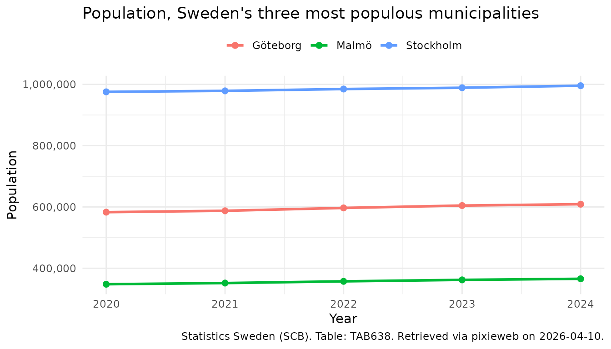

This vignette provides a quick start guide to get up and running with
pixieweb as fast as possible. For a more comprehensive
introduction to the pixieweb package, see Introduction to pixieweb.
In this guide we walk you through five steps to connect to a PX-Web API, find a table, inspect its variables, download data and plot it. We’ll use Statistics Sweden (SCB) as our example throughout.
PX-Web tables are multi-dimensional data cubes. Each table
has one or more variables (dimensions) — for example,
region, sex and year — and one or more content codes
(what is being measured). To download data you specify which values you
want along each variable. See
vignette("introduction-to-pixieweb") for a deeper
explanation of the data model.
1. Connect to an API
pixieweb ships with a catalogue of known PX-Web
instances. px_api() accepts either a known alias (such as
"scb", "ssb", "statfi") or a full
base URL.
scb <- px_api("scb", lang = "en")
scb#> PX-Web API: Statistics Sweden (SCB) (v2, en)
#> Max cells: 150000 | Rate limit: 30/10sTo see all known APIs, run px_api_catalogue().
2. Find a table
PX-Web organises data into tables. Use
get_tables() to search the catalogue (server-side on v2
APIs, folder walk on v1):
tables <- get_tables(scb, query = "population")
dplyr::glimpse(tables)#> Rows: 26
#> Columns: 13
#> $ id <chr> "TAB638", "TAB1743", "TAB934", "TAB4552", "TAB6473", "TAB…
#> $ title <chr> "Population by region, marital status, age and sex. Year…
#> $ description <chr> "", "", "", "", "", "", "", "", "", "", "", "", "", "", "…
#> $ category <chr> "public", "public", "public", "public", "public", "public…
#> $ updated <chr> "2025-02-21T07:00:00Z", "2015-10-01T07:30:00Z", "2015-10-…
#> $ first_period <chr> "1968", "1995", "1995", "1960", "2025M01", "2000M01", "20…
#> $ last_period <chr> "2024", "2013", "2013", "2023", "2026M01", "2024M12", "20…
#> $ time_unit <chr> "Annual", "Annual", "Annual", "Annual", "Monthly", "Month…
#> $ variables <list> ["region", "marital status", "age", "sex", "observations…
#> $ subject_code <chr> "BE", "LE", "LE", "MI", "BE", "BE", "BE", "BE", "MI", "LE…
#> $ subject_path <chr> "Population > Population statistics > Number of inhabitan…
#> $ source <chr> "Statistics Sweden", "Statistics Sweden", "Statistics Swe…
#> $ discontinued <lgl> FALSE, FALSE, FALSE, FALSE, FALSE, FALSE, FALSE, FALSE, F…The result is a tibble. You can narrow it further on the client side
with table_search(), and inspect candidate tables with
table_describe():
tables |>
table_search("municipal") |>
table_describe(max_n = 2, format = "md", heading_level = 4)
#> Warning: No tables to describe.table_describe() shows the subject path, time period
range, and data source alongside the title — making it much easier to
pick the right table.
3. Explore variables
Once you have a table ID, inspect what variables (dimensions) it has.
get_variables() returns a tibble with one row per
variable:
vars <- get_variables(scb, "TAB638")
vars |> variable_describe()#> ── Region (region) ──────────────────────────────────────────────────────────────
#> Values: 312, optional (elimination)
#> First values: 00 Sweden, 01 Stockholm county, 0114 Upplands Väsby, 0115 Vallentuna, 0117 Österåker ... and 307 more
#> Codelists: agg_RegionA-region_2 A-regions, agg_RegionLA1998 Local labour markets 1998, agg_RegionLA2003_1 Local labour markets 2003 ... and 15 more
#>
#> ── Civilstand (marital status) ──────────────────────────────────────────────────
#> Values: 4, optional (elimination)
#> First values: OG single, G married, ÄNKL widowers/widows, SK divorced
#>
#> ── Alder (age) ──────────────────────────────────────────────────────────────────
#> Values: 102, optional (elimination)
#> First values: 0 0 years, 1 1 year, 2 2 years, 3 3 years, 4 4 years ... and 97 more
#> Codelists: agg_Ålder10årJ ´10-year intervals, agg_Ålder5år 5-year intervals, vs_Ålder1årA Age, 1 year age classes ... and 1 more
#>
#> ── Kon (sex) ────────────────────────────────────────────────────────────────────
#> Values: 2, optional (elimination)
#> First values: 1 men, 2 women
#>
#> ── ContentsCode (observations) ──────────────────────────────────────────────────
#> Values: 2, mandatory
#> First values: BE0101N1 Population, BE0101N2 Population growth
#>
#> ── Tid (year) ───────────────────────────────────────────────────────────────────
#> Values: 57, mandatory
#> Time variable: Yes
#> First values: 1968 1968, 1969 1969, 1970 1970, 1971 1971, 1972 1972 ... and 52 moreYou can inspect the available values for any single variable with
variable_values():
vars |> variable_values("Region")#> # A tibble: 312 × 2
#> code text
#> <chr> <chr>
#> 1 00 Sweden
#> 2 01 Stockholm county
#> 3 0114 Upplands Väsby
#> 4 0115 Vallentuna
#> 5 0117 Österåker
#> 6 0120 Värmdö
#> 7 0123 Järfälla
#> 8 0125 Ekerö
#> 9 0126 Huddinge
#> 10 0127 Botkyrka
#> # ℹ 302 more rows4. Get data
Now we know which variables the table has and what values are
available. Pass your selections to get_data():
-
ContentsCodetells the API what to measure (population, deaths, etc.)."*"means “all measures in this table”. - Variables you omit are eliminated — the
API returns a pre-computed aggregate (for example, omitting a
Sexvariable gives totals for both sexes). Not every variable is eliminable; seevignette("introduction-to-pixieweb")for the distinction between mandatory and eliminable variables. - Selection helpers like
px_top(),px_from()andpx_range()let you select values without knowing exact codes. Use them when you want “the latest N periods” or “everything from 2020 onward”.
pop <- get_data(scb, "TAB638",
Region = c("0180", "1480", "1280"),
ContentsCode = "*",
Tid = px_top(5)
)
dplyr::glimpse(pop)#> Rows: 30
#> Columns: 8
#> $ table_id <chr> "TAB638", "TAB638", "TAB638", "TAB638", "TAB638", "T…
#> $ Region <chr> "0180", "0180", "0180", "0180", "0180", "0180", "018…
#> $ Region_text <chr> "Stockholm", "Stockholm", "Stockholm", "Stockholm", …
#> $ ContentsCode <chr> "BE0101N1", "BE0101N1", "BE0101N1", "BE0101N1", "BE0…
#> $ ContentsCode_text <chr> "Population", "Population", "Population", "Populatio…
#> $ Tid <chr> "2020", "2021", "2022", "2023", "2024", "2020", "202…
#> $ Tid_text <chr> "2020", "2021", "2022", "2023", "2024", "2020", "202…
#> $ value <dbl> 975551, 978770, 984748, 988943, 995574, 1477, 3219, …Notice the _text suffix: get_data() returns
both raw code columns (Region = "0180") and human-readable
label columns (Region_text = "Stockholm"). Use
_text columns for display and plotting; use the raw codes
for filtering and joining.
5. Inspect and visualise results
Finally, time to plot our data:
library("ggplot2")
pop_plot <- pop |>
# Keep only the Population content code (the table also has
# "Population growth"); convert year to Date for nice axis breaks
dplyr::filter(ContentsCode == "BE0101N1") |>
dplyr::mutate(year = as.Date(paste0(Tid, "-01-01")))
ggplot(pop_plot, aes(year, value, colour = Region_text)) +
# One line per region
geom_line(linewidth = 1) +
geom_point(size = 2) +
# Years as dates — ensures whole-year breaks, not decimals
scale_x_date(date_breaks = "1 year", date_labels = "%Y") +
scale_y_continuous(labels = scales::comma) +
labs(
title = "Population, Sweden's three most populous municipalities",
x = "Year",
y = "Population",
colour = NULL,
caption = px_cite(pop)
) +
theme_minimal() +
theme(legend.position = "top")
Note the use of px_cite() to produce a citation for the
downloaded data, and the conversion of Tid to
Date before plotting: years as Date keep
scale_x_date() on whole years (e.g. 2020, 2021, 2022)
rather than producing decimal breaks like 2020, 2022.5, 2025. This is a
pattern you will want to reuse for any time-series analysis across
pixieweb, rKolada and rTrafa.
Other useful helpers you may want to explore next:
-
data_minimize()— remove columns where all values are identical -
data_legend()— generate a caption string from variable metadata -
prepare_query()— build queries with sensible defaults for tables with many variables
Next steps
-
Deeper walkthrough —
vignette("introduction-to-pixieweb")covers the full data model, codelists, wide output, saved queries and advanced query composition. -
Multiple countries —
vignette("multi-api")shows how to compare data across national statistics agencies (SCB, SSB, Statistics Finland and more). - ggplot2 reference — https://ggplot2-book.org/ for more on visualisation.